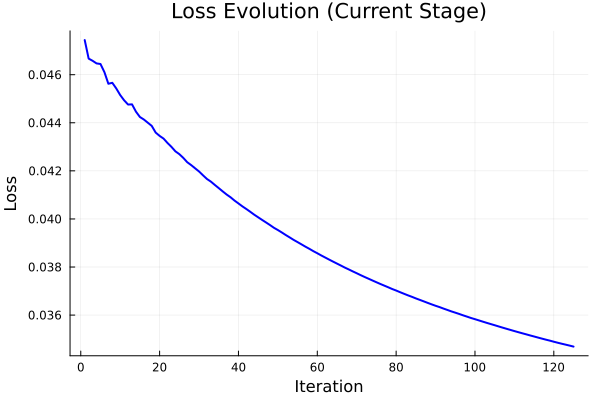

Graph Neural ODE
1. The Mathematical Framework
We model the evolution of infection cases across $N$ interconnected states using a Graph Neural Ordinary Differential Equation (GNN-ODE). Unlike standard epidemiological models (SIR) which impose rigid structures, we learn the derivative function $f$ directly from data.
The Core Equation
The system state $H(t)$ evolves according to:
Where:
- $H(t) \in \mathbb{R}^{N \times 1}$: The vector of infected cases (normalized).
- $G \in \mathbb{R}^{N \times N}$: The adjacency matrix representing spatial connectivity (population flow).
- $Z \in \mathbb{R}^{N \times d}$: The Latent Variables representing unobserved static features (e.g., local policy, culture).
- $\text{NeuralW}$: A Graph Neural Network (GNN) parameterized by weights $W$.
Latent Augmentation
Standard Neural ODEs often fail to capture heterogeneous dynamics. We augment the state space: $$ \tilde{H} = [H_{\text{obs}}; Z_{\text{latent}}] $$ This allows the ODE to "remember" state-specific traits that determine the trajectory shape.
2. The Journey: From Failure to Breakthrough
Phase 1: The Bottleneck
Initial experiments using a standard GNN architecture (Width 16) hit a hard ceiling.
- Configuration: 16 Channels, Aggressive Curriculum.
- Problem: Training Loss saturated at 0.081.
- Diagnosis: High Bias (Underfitting). The network lacked the computational capacity to approximate the complex dynamics.
Phase 2: The Solution
We hypothesized that the physical capacity of the neural network was the limiting factor.
- Hypothesis: Increase Width $16 \to 32$ & Smooth Curriculum.
- Result: Training Loss collapsed to 0.034.
- Outcome: Test MSE dropped by 61.5%.
3. Visual Evidence (Real Cases)
The plots below demonstrate the model's performance on the Test Set (Days 180-401).
Note: Data has been denormalized ($e^x - 1$) to show real case counts.
Success Stories: Capturing Complexity
States like Ohio (OH) and New York (NY) presented complex oscillatory patterns that the baseline model failed to capture. The refined model (Test-2) tracks them with remarkable precision.

MSE Improvement: +85%

MSE Improvement: +31%

MSE Improvement: +64%

Linear Tracking
4. The Optimization Landscape
A key component of success was the Smoothed Curriculum Learning. Instead of forcing the ODE to integrate 20 steps immediately, we slowly expanded the horizon $T$:
T = [5, 10, 20, 60, 90, 120, 150, 180]
This stabilized the gradients $\frac{dL}{d\theta}$ backpropagated through time (Adjoint Method).

Final Stage Training Loss Convergence